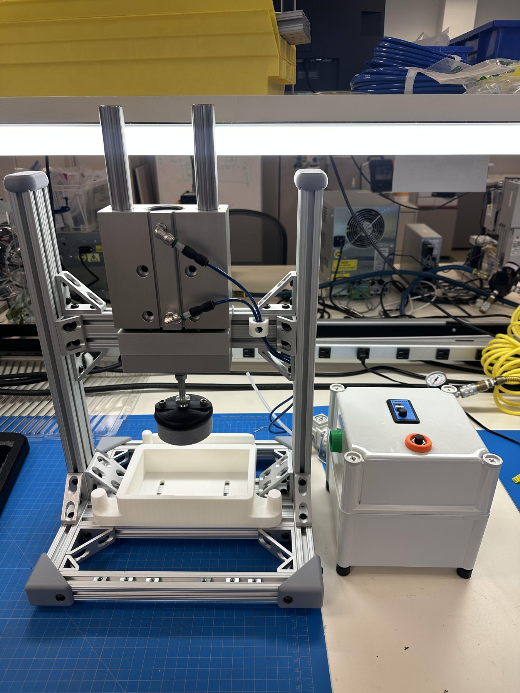

A production press with two setpoints and no electronics
A production-intent fixture that bonds a touchscreen, LED membrane, and cosmetic bezel at a controlled 125 lb for exactly 10 seconds, locates the bezel to ±0.05 in, and has nothing electrical for the line to validate.

Why it exists
The controller's front assembly is a stack of cosmetic bezel, LED membrane, and touchscreen joined with a 3M structural adhesive that specifies a clamping force and dwell to reach bond strength. The existing approach was manual and inconsistent, so bond quality and part-to-part alignment varied.
An electrically timed press would have needed its own electrical validation and maintenance path on the line. The press is therefore fully pneumatic: load the nest, trigger the cycle, the cylinder holds for the timed dwell, the circuit vents and resets itself. Nothing to program, no electrical failure mode to qualify.
Locating, not just holding
The bezel is a cosmetic part with curved faces. I surface-modeled the nest in SolidWorks directly from the bezel's outer geometry so it seats on its own contours, and the touchscreen and membrane are captured relative to it. That is what holds bezel position to ±0.05 in and keeps the screen and window aligned on every unit.
One fixture does two jobs. The mating faces, the printed nest below and the press foot above, are designed to swap, so the same press bonds the touchscreen to the bezel and, with the other face set installed, the LED membrane panel to the bezel. The force, dwell, and alignment scheme stay identical; only the contact geometry changes.
The design went through several major revisions coordinated with a second engineering site, and shipped as a complete package: drawings and BOMs for both the press and its pneumatic control box, plus a qualification plan of adhesive shear tests and optical alignment checks.
Technical details
| Force / dwell | 125 lb for 10 s, set by regulator and self-resetting pneumatic timer |
|---|---|
| Alignment | Bezel located to ±0.05 in by a surface-modeled nest |
| Mating faces | Swappable nest and press-foot sets: one for touchscreen-to-bezel, one for membrane-to-bezel, on the same frame and control box |
| Control | Fully pneumatic, no electrical components, no software |
| Safety | Guarding and operator-clear triggering built into the cycle |
| Documentation | Full drawings and BOMs for the press and the pneumatic control box |
| Qualification plan | Adhesive shear testing plus optical alignment checks on laminated assemblies |
| Status at handoff | Working prototype, validated force profile, adopted by the assembly line as of my departure |
Related: ablation test fixture redesign, 3.5x stronger
On the same program a 3D-printed ablation test fixture kept snapping its locating pin. The failure was layer orientation: FDM layer lines ran perpendicular to the bending load and acted as a shear plane. I split the pin into a separate keyed body so the base prints upright and the pin prints with its layers along the load path, then quantified the change with a cantilever test before release. Bending strength improved about 3.5x, and the fixture was released as a new revision through PLM change control with 15+ cross-functional signatures.